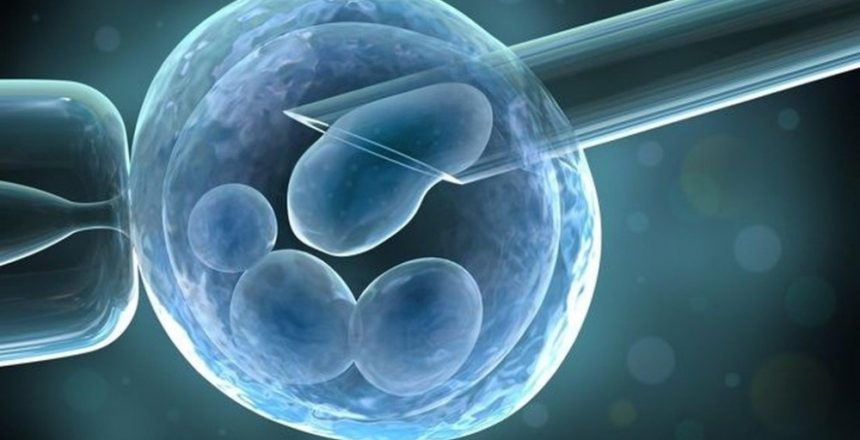

CELULAS MADRE
Las células madre son un tipo de célula indiferenciada que tiene la capacidad de dar origen a células específicas y especializadas.
Las células madre se pueden estimular para que se conviertan en un tipo específico de células, lo que permite a los médicos capacitados en el campo de la medicina regenerativa utilizar células madre para reparación de ciertos tejidos y para el tratamiento de ciertas enfermedades.
Las células madre son primeramente atraídas hacia el sitio de la lesión para luego convertirse en el tipo de célula que se necesita para reparar o curar el tejido dañado.
Las células madre mesenquimales (MSC) son ideales para el tratamiento de muchos tipos de lesiones y enfermedades, y pueden derivarse de muchos tipos diferentes de tejidos, entre ellos: Médula ósea, tejido adiposo, sangre del cordón y tejido del cordón. Nuestra clínica tiene acceso a cuatro fuentes de células madre mesenquimales adultas y cuenta con el equipo para cultivar y expandir dichas células, lo que aumenta el número de células madre mesenquimales viables. Esto permite a nuestros médicos seleccionar un tratamiento óptimo e individualizado para cada paciente, que va en función de su enfermedad, síntomas y necesidades específicas.
